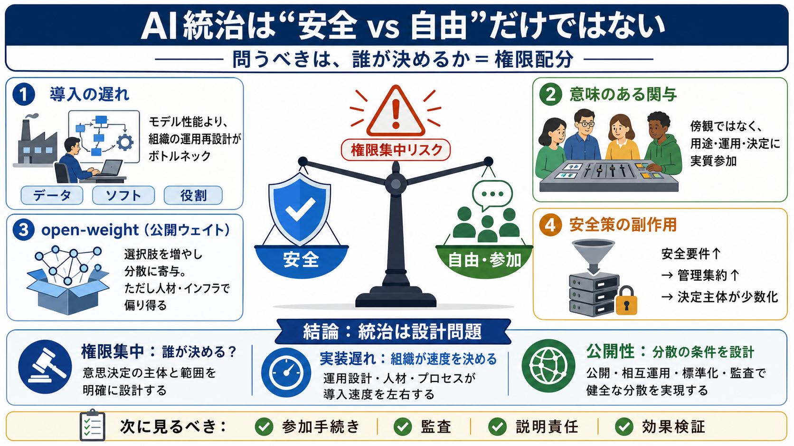

OpenAI IPO Wants $1 Trillion; Its CEO Just Admitted His Disruption Timeline Was Wrong
In an August 23 interview with podcaster David Senra, Altman said that when GPT-4 launched in 2023, he expected rapid ec…

統治は「安全 vs 自由」だけで終わらない
アルトマン（Sam Altman）の論点を、導入遅れ・公開ウェイト（open-weight）・人々の“意味のある関与”という軸で整理します。
中心論点
AIの統治は、危険を減らすだけの話ではありません。安全対策が進むほど、運用・認証・管理の権限が特定の主体に集まり得ます（権力集中リスク）。
導入の遅れ
経済的・産業的な混乱が遅れるのは、モデルの賢さではなく、企業の実装（運用再設計）が追いつかないためです。
遅れの意味
モデルが賢くなっても、事業再設計が即座に進むとは限りません。導入の遅れは移行をなだらかにする“安定要因”にもなります。
意味のあるコントロール
“意味のあるコントロール”は、単なる傾聴ではなく、AIの社会的な影響（何に使われ、どう運用されるか）に実質的に関与できる状態を指します。
ジレンマ
厳格な安全のための運用・認証・管理が、特定の主体に集まると、重大な判断が少数化し、人々の自由な関与余地が狭まります。
実装プロセスが決める
AIを業務に入れるには、技術以外の変更が必要です。ここがボトルネックになり、モデル能力と社会影響の速度がズレます。
起業の可能性
AIは小規模事業者を増やし、起業が拡大する可能性があります。だが記事は、社会的な“自律性”や“機会”の拡大がまだ十分に実証されていないと述べます。
公開ウェイト
記事では公開ウェイト型モデル（gpt-oss-120b / gpt-oss-20b）が話題になります。公開性は分散に寄与し得る一方、統治と両立する設計が必要で、万能ではありません。
単純化の落とし穴
リスクを下げる仕組みが、逆に自由や参加を狭め、権限集中を招くことがあるためです。問うべきは「善悪」より「制度の帰結」です。
この記事だけでは
提示文の範囲では、「誰が」「どの手続きで」「どこまで決めるのか」といった具体的制度案が抽象的です。公開ウェイトについても、社会的分散や実効的統治につながるメカニズム検証は限定的です。
結論
AIの社会的な影響をコントロールするには、モデル性能だけでなく組織・制度の“権限配分”を問う必要があります。安全と自由の両立は、公開性や導入速度の議論と切り離せません。
In an August 23 interview with podcaster David Senra, Altman said that when GPT-4 launched in 2023, he expected rapid ec…
OpenAI released two open-weight models, gpt-oss-120b and gpt-oss-20b, on August 5. The former is designed for high-end c…
“I thought when we got to GPT-4, which was back in 2023, that very quickly after that there was going to be much more di…
that our rate of scientific discovery in the world like quadruples or something. Um, that would that would satisfy any t…
Sam: To some degree, I hope it is. The future I would like to see is where access to AI is super democratized, where the…